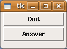
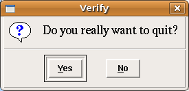
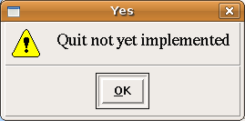
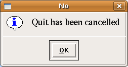
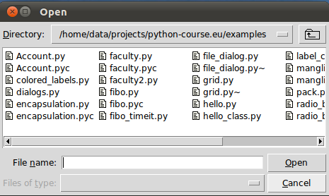
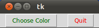
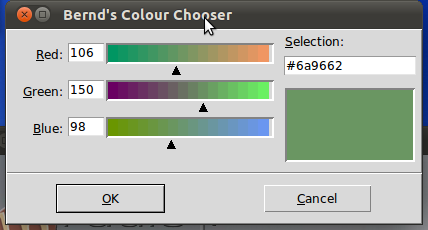

Dialogues and Message Boxes
Introduction
Tkinter (and TK of course) provides a set of dialogues (dialogs in American English spelling), which can be used to display message boxes, showing warning or errors, or widgets to select files and colours. There are also simple dialogues, asking the user to enter string, integers or float numbers.Let's look at a typical GUI Session with Dialogues and Message boxes. There might be a button starting the dialogue, like the "quit" button in the following window:

Pushing the "quit" button raises the Verify window:

Let's assume, that we want to warn users, that the "quit" functionality is not yet implemented. In this case we can use the warning message to inform the user, if he or she pushes the "yes" button:

If somebody types the "No" button, the "Cancel" message box is raised:

Let's go back to our first Dialogue with the "quit" and "answer" buttons. If the "Answer" functionality is not implemented, it might be useful to use the following error message box:

Python script, which implements the previous dialogue widges:
from Tkinter import *
from tkMessageBox import *
def answer():
showerror("Answer", "Sorry, no answer available")
def callback():
if askyesno('Verify', 'Really quit?'):
showwarning('Yes', 'Not yet implemented')
else:
showinfo('No', 'Quit has been cancelled')
Button(text='Quit', command=callback).pack(fill=X)
Button(text='Answer', command=answer).pack(fill=X)
mainloop()
Message Boxes
The message dialogues are provided by the tkMessageBox module.The tkMessageBox consists of the following functions, which correspond to dialog windows:
- askokcancel(title=None, message=None, **options)
Ask if operation should proceed; return true if the answer is ok - askquestion(title=None, message=None, **options)
Ask a question - askretrycancel(title=None, message=None, **options)
Ask if operation should be retried; return true if the answer is yes - askyesno(title=None, message=None, **options)
Ask a question; return true if the answer is yes - askyesnocancel(title=None, message=None, **options)
Ask a question; return true if the answer is yes, None if cancelled. - showerror(title=None, message=None, **options)
Show an error message - showinfo(title=None, message=None, **options)
Show an info message - showwarning(title=None, message=None, **options)
Show a warning message
Open File Dialogue
There is hardly any serious application, which doesn't need a way to read from a file or write to a file. Furthermore, such an application might have to choose a directory. Tkinter provides the module tkFileDialog for these purposes.
from Tkinter import *
from tkFileDialog import askopenfilename
def callback():
name= askopenfilename()
print name
errmsg = 'Error!'
Button(text='File Open', command=callback).pack(fill=X)
mainloop()
The code above creates a window with a single button with the text "File Open". If the button is pushed, the following window appears:

The look-and-feel of the file-open-dialog depends on the GUI of the operating system. The above example was created using a gnome desktop under Linux. If we start the same program under Windows 7, it looks like this:

Choosing a Colour
There are applications where the user should have the possibility to select a colour. Tkinter provides a pop-up menu to choose a colour. To this purpose we have to import the tkColorChooser module and have to use the method askColor:result = tkColorChooser.askColor ( color, option=value, ...)If the user clicks the OK button on the pop-up window, respectively, the return value of askColor() is a tuple with two elements, both a representation of the chosen colour, e.g. ((106, 150, 98), '#6a9662')
The first element return[0] is a tuple (R, G, B) with the RGB representation in decimal values (from 0 to 255). The second element return[1] is a hexadecimal representation of the chosen colour.
If the user clicks "Cancel" the method returns the tuple (None, None).
The optional keyword parameters are:
| color | The variable color is used to set the default colour to be displayed. If color is not set, the initial colour will be grey. |
| title | The text assigned to the variable title will appear in the pop-up window's title area. The default title is "Color". |
| parent | Make the pop-up window appear over window W. The default behaviour is that it appears over the root window. |
Let's have a look at an example:
from Tkinter import *
from tkColorChooser import askcolor
def callback():
result = askcolor(color="#6A9662",
title = "Bernd's Colour Chooser")
print result
root = Tk()
Button(root,
text='Choose Color',
fg="darkgreen",
command=callback).pack(side=LEFT, padx=10)
Button(text='Quit',
command=root.quit,
fg="red").pack(side=LEFT, padx=10)
mainloop()
The look and feel depends on the operating system (e.g. Linux or Windows) and the chosen
GUI (GNOME, KDE and so on). The following windows appear, if you use Gnome:


Using the same script under Windows 7 gives us the following result: